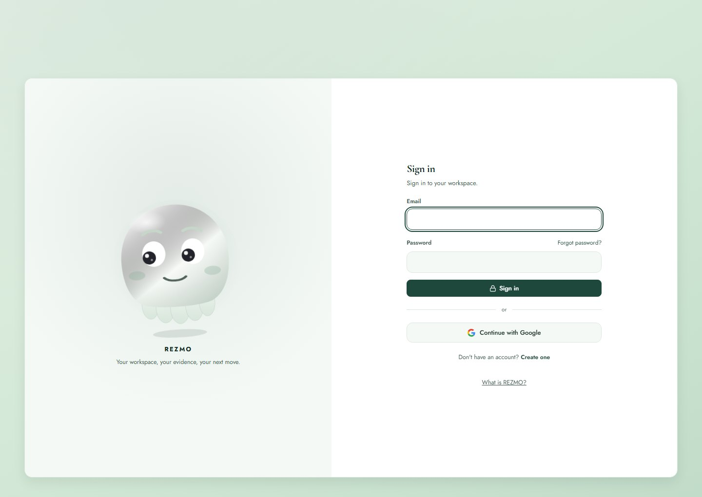

REZMO: Memory That Outlives the Chat
Published: October 2026 | Category: AI Infrastructure

Every assistant keeps a memory of your work, and every one of those memories is a summary written by the assistant, held by the assistant, and available only inside that product. Change tools and the record resets to a thinner copy of itself. After enough switches, the work is gone and only summaries of it remain.
REZMO takes the opposite position: the record is the asset, and the models are readers of it. I built it at rezmo.online.
Recorded walkthrough: sign-in, the workspace, and how the memory layer serves a connected model.
The design: a record you own
A user's conversations, notes, projects and the documents generated from them are stored as their material, with a copy in a folder in their own Google Drive. If REZMO disappeared tomorrow, the folder would still open. That constraint decided almost everything else in the architecture.
- Full depth, not digests. The record keeps the files, not a paragraph about the files, so a later model can go back to the source.
- Portable by default. Download the folder, keep it offline, push it back later, continue as if nothing had been lost.
- Many models, one record. The product name for the result is a Digital Passport: one history that travels with the user across assistants.

How models connect: MCP, not another chat window
The answer to "which tool remembers your work?" is not a better chat window. It is a record that lives outside all of them. REZMO runs a Model Context Protocol server, so Claude, ChatGPT, Grok, Cursor or any other MCP-capable client can be pointed at the same record.
The permission model matters as much as the protocol. The user approves the connection in their browser and decides whether a client may only read, or may also add to the record. Memory is not something a model should be able to write to silently.
The consent step: a client is approved in the browser before it can touch the record.
Topology: one host, an edge worker, and a very short trip to the database
The API, Postgres 17 and Redis run as containers on a single Contabo host behind Cloudflare. The frontend is a Cloudflare Worker. Keeping the pieces few was a deliberate trade: one host is easy to reason about, easy to back up, and cheap to run.
Cloudflare does more than sit in front of the site: DNS, WAF rules and TLS terminate at the edge, and the Worker is the only public entry point to the API. The origin only answers traffic that arrives through Cloudflare.
The performance lesson was about placement, not hardware:
| Layout | Database round trip |
|---|---|
| Database on a separate host from the API | ~112 ms |
| Database next to the API on the same host | ~5 ms |
Moving Postgres next to the API cut the round trip by more than an order of magnitude. For a request path that touches the database several times per call, that is not a micro-optimisation — it is the difference between a product that feels instant and one that feels broken. The trade is that the host becomes a real dependency, which is exactly why the record also lives in the user's Drive.
Tests are the reason I can move fast on it
REZMO carries 2,000+ backend tests and 480+ frontend tests. That sounds excessive until you consider what the product does: it reads and writes a user's own history. A regression here is not a visual bug, it is lost context.
- Backend: Postgres 17 and Redis behaviour, permission boundaries between read-only and read-write clients, and the Drive synchronisation path.
- Frontend: the approval flow and workspace states, because the moment a user cannot tell what a model is allowed to do, trust is gone.
Payments run live through Paystack, which adds the usual requirement that nothing in the entitlement path is allowed to be flaky.
Mail is part of the stack too
REZMO's email is self-hosted on its own domain: mailboxes served from my own host over IMAP and SMTP rather than handed to a third-party mail provider. It keeps account mail, the domain's DNS and the product under one operator, and it means the domain's SPF, DKIM and DMARC records are mine to get right. That is the same trade as the rest of the system — fewer moving providers, more responsibility.
What I took from building it
- Ownership is an architecture decision. Putting the record in the user's Drive changed the schema, the sync path and the failure modes — and it is the reason the product is credible.
- Latency is a placement problem first. Before optimising queries, check what the query is crossing.
- Give the model a role, not the keys. Read-only versus read-write is the simplest permission model that still respects the user.
- Test the product's promise. The promise is "your history is still here". Test that, not the button colours.
Related
- ForChi: A Telegram Agent With Three Jobs
- Agentic AI: Building LLM Systems with Function Calling
- Honk and the V6.1 Football Engine
Author: Agu Chiedozie | Cloud & AI Systems Engineer